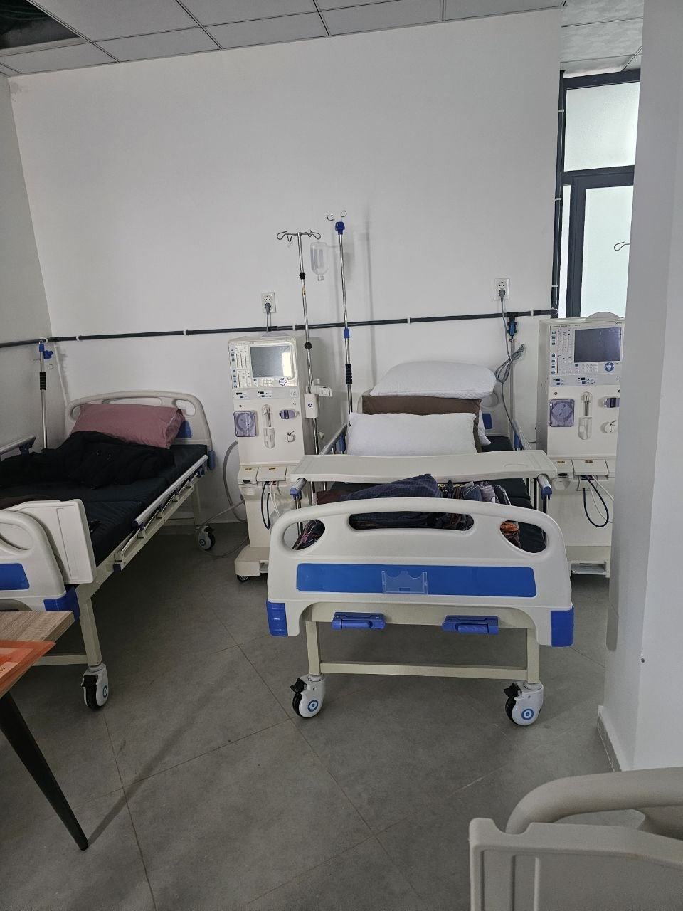

Conseils & Guide
pour Patients en Dialyse
Toutes les informations essentielles sur la prise en charge, les documents nécessaires et les conseils pratiques pour votre quotidien en dialyse.
Prise en charge financière
L'insuffisance rénale chronique terminale est prise en charge à 100% par la sécurité sociale (CNAS / CASNOS). Les séances d'hémodialyse, les médicaments liés au traitement et le transport sanitaire sont couverts dans le cadre de la convention.
Documents à présenter
Vacanciers (étrangers/locaux)
Protocole de dialyse / Fiche de liaison Bilan récent (Sérologie) Compte rendu médical récent
CNAS
Ouverture de droit originale et récente Bilan récent (Sérologie) Carte de groupage sanguin Dossier médical et/ou fiche de liaison 02 photos d'identité 01 certificat de résidence
CASNOS
Prise en charge CASNOS valide Bilan récent (Sérologie) Carte de groupage sanguin Dossier médical et/ou fiche de liaison 02 photos d'identité 01 certificat de résidence
Transport sanitaire
Le Réseau Boucenna met à votre disposition son service de transport sanitaire avec des ambulances médicalisées et des Véhicules Sanitaires Légers (VSL).
Nos chauffeurs sont disponibles 24h/24 et 7j/7 pour vous prendre en charge entre votre domicile et le centre de dialyse, en toute sécurité et confort.

Conseils sur la Fistule
Une fistule artério-veineuse doit être créée avant le début de l'hémodialyse pour assurer un accès vasculaire de qualité. Surveillez quotidiennement son bon fonctionnement en ressentant les battements caractéristiques (thrill). Évitez le port de montres, bracelets, bijoux ou de tout pansement trop serré sur le bras porteur de la fistule. Protégez-la lors d'activités physiques et ne dormez pas sur ce bras. N'utilisez jamais de produits ou crèmes sur la fistule sans avis médical préalable.
Alimentation & Nutrition
Une alimentation équilibrée et adaptée est essentielle pour les patients en hémodialyse. La prise de poids entre deux séances ne doit pas dépasser 5% du poids du corps. Contrôlez vos apports en sel, potassium et phosphore selon les recommandations de votre médecin. Limitez les aliments riches en potassium : bananes, chocolat, légumes secs, potages concentrés, fruits secs.
Besoin d'aide personnalisée ?
Notre équipe est à votre écoute pour répondre à toutes vos questions et vous accompagner.